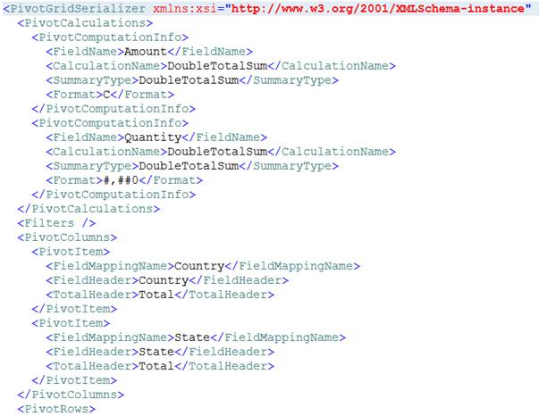

Using this feature, you can save the current state of PivotGrid as an XML file format and restore the same at any time.
The following properties of PivotGrid control can be serialized.
|
Property Name |
Type |
|
AllowResizeColumns |
bool |
|
AllowResizeRows |
bool |
|
AllowSelection |
bool |
|
AutoSizeColumnCount |
int |
|
AutoSizeOption |
GridAutoSizeOption |
|
AutoSizeRowCount |
int |
|
DeferLayoutUpdate |
bool |
|
Filters |
ObservableCollection<FilterExpression> |
|
FreezeHeaders |
bool |
|
IsDynamicData |
bool |
|
PivotCalculations |
ObservableCollection<PivotComputationInfo> |
|
PivotColumns |
ObservableCollection<PivotItem> |
|
PivotFields |
ObservableCollection<PivotItem> |
|
PivotRows |
ObservableCollection<PivotItem> |
|
ShowCalculationsAsColumns |
bool |
|
ShowFieldList |
bool |
|
ShowGrandTotals |
bool |
|
ShowGroupingBar |
bool |
|
GroupingBar.AllowFiltering |
bool |
|
GroupingBar.AllowSorting |
bool |
On Serialization, the expand and the collapse state of PivotGrid cells are maintained. So while de-serializing, the item source specified for the Grid should be as same as that when used in Serialization. This can be ignored by setting IgnoreExpandCollapseOnSerialization property of PivotGrid control to False.
Use Case Scenarios
Serialization can be implemented for applications which need to save its data and structure after the application is closed. Serialization supports to save the structure and data of PivotGridControl to an XML file and it can be loaded at any time.
Adding Serialization/Deserialization
Serialization/Deserialization can be achieved using the following code snippet,
|
[C#]
/// Serialize the PivotGrid into XML file format. this .pivotGrid1.Serialize();
/// De serialize the PivotGrid from the saved XML file. this .pivotGrid1.Deserialize();
/// Serialize the PivotGrid into XML file format and saves it in the specified location. this .pivotGrid1.Serialize(@"C:/PivotGrid.xml");
/// De serialize the PivotGrid from the specified XML file. this .pivotGrid1.Deserialize(@"C:/PivotGrid.xml");
|
|
[VB]
' Serialize the PivotGrid into XML file format. Me .pivotGrid1.Serialize()
' De serialize the PivotGrid from the saved XML file. Me .pivotGrid1.Deserialize()
' Serialize the PivotGrid into XML file format and saves it in the specified location. Me .pivotGrid1.Serialize("C:/PivotGrid.xml")
' De serialize the PivotGrid from the specified XML file. Me .pivotGrid1.Deserialize("C:/PivotGrid.xml")
|
Methods
|
Method |
Description |
Parameters |
Type |
Return Type |
|
Serialize() |
Serializes the PivotGrid into XML file format using the save file dialog |
- |
void |
void |
|
Deserialize() |
Deserializes the PivotGrid from the saved XML file using the open file dialog |
- |
void |
void |
|
Serilize(string fileName) |
Serializes the PivotGrid into XML file format and saves it in the specified location |
string fileName |
void |
void |
|
Deserialize(string filename) |
Deserializes the PivotGrid from the specified XML file |
string fileName |
void |
void |

Figure 30: Serialized XML file
Sample Link
To access a Conditional Formatting sample:
5. Open the Syncfusion Dashboard.
6. Click Business Intelligence.
7. Click the WPF drop-down list, and select Explore Samples.
8. Navigate to PivotAnalysis.WPF -> Samples -> Serialization -> SerializationDemo.
9.